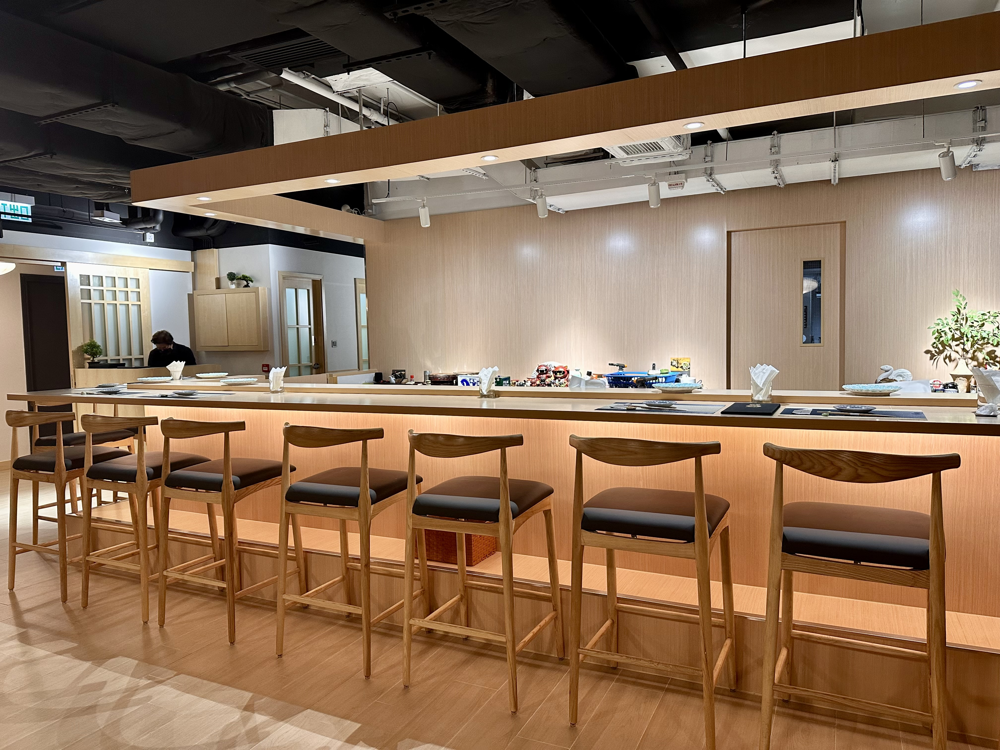
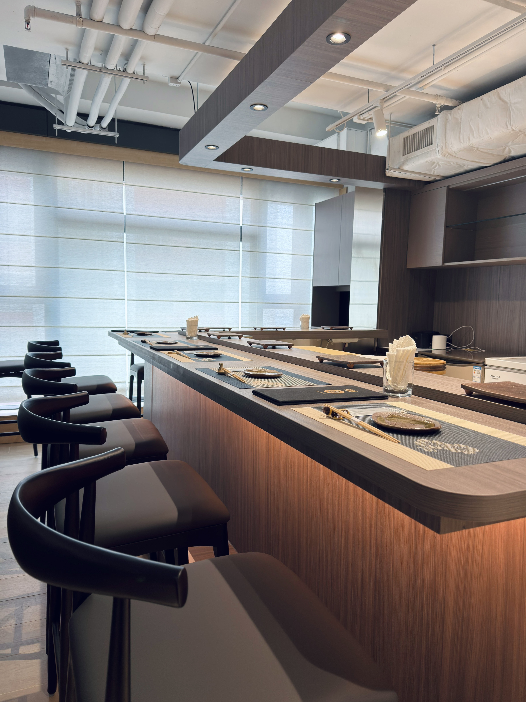

Experience the art of traditional Japanese cuisine in the heart of the city. From premium sashimi to delicate handrolls, every dish is crafted with fresh, seasonal ingredients and decades of passion.

Watch our master chefs craft your meal right before your eyes.

Minimalist architecture designed for an intimate dining experience.
Reservations can be booked up to 30 days in advance. Click below to view available mealtimes and secure your table instantly via our booking platform.
Reserve via inlineAddress: 20/F SL GINZA, 68 Electric Road, Tin Hau
Phone: (852) 9488 1423
Hours: Mon-Sun: 11:45 AM - 10:00 PM
© 2026 Sakura Bites. All Rights Reserved.